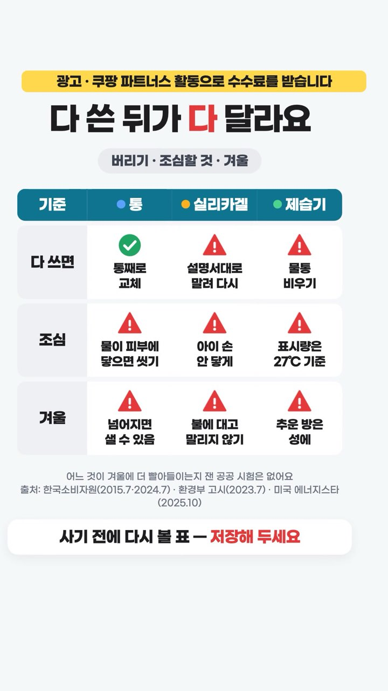

3번 영상
약 18℃ 밑 방 제습기에 얼음 낄 수도
광고 이 게시물은 쿠팡 파트너스 활동의 일환으로, 이에 따른 일정액의 수수료를 제공받습니다.
영상에서 비교한 3가지예요. 누르면 쿠팡 검색 결과로 가요.
영상 속 비교표 바로 보기 ↓겨울 제습, 여름과 다른 점
통 제습제 · 실리카겔 · 제습기
제습기 표시량은 27℃·습도 60% 기준
- 통 제습제 (염화칼슘)
- ✔ 교체 시기 표시 있음
- ⚠ 고인 물 금속 부식
- 옷장· 신발장
- 실리카겔 (알갱이)
- ✔ 제품 따라 다시 씀
- ⚠ 불에 대고 말리지 않기
- 서랍· 작은 통
- 제습기 (전기)
- ✔ 방 전체를 말림
- ⚠ 18℃ 밑이면 성에 낄 수
- 방이 따뜻한 집
다 쓴 뒤가 다 달라요
버리기 · 조심할 것 · 겨울
| 통 | 실리카겔 | 제습기 | |
|---|---|---|---|
| 다 쓰면 | ✔ 통째로 교체 | ⚠ 설명서대로 말려 다시 | ⚠ 물통 비우기 |
| 조심 | ⚠ 물이 피부에 닿으면 씻기 | ⚠ 아이 손 안 닿게 | ⚠ 표시량은 27℃ 기준 |
| 겨울 | ⚠ 넘어지면 샐 수 있음 | ⚠ 불에 대고 말리지 않기 | ⚠ 추운 방은 성에 |
어느 것이 겨울에 더 빨아들이는지 잰 공공 시험은 없어요 출처: 한국소비자원(2015.7·2024.7) · 환경부 고시(2023.7) · 미국 에너지스타(2025.10)
